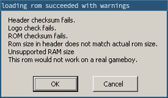
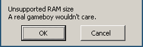

ヘッダー
hello-world.asmの先頭付近のある行に戻りましょう。
ds $150 -@, 0 ; ヘッダーのためのスペースを確保するこの謎のヘッダーは何なのか、なぜ私たちはそのための場所を作っているのか、などなど、このレッスンで疑問が解決されます。
ヘッダーとは何ですか？
まず、ヘッダとは何かというと、$0104から$014Fまでのメモリ領域で、ROMのタイトル、ゲームボーイカラーの互換性、サイズ、チェックサム2つ、そして興味深いことに、電源投入時のアニメーションで表示される任天堂ロゴといったメタデータが入っています。
この情報などは、Pan Docsに掲載されています。
興味深いことに、ヘッダの情報のほとんどは、実際のハードウェアでは重要ではありません（ROMのサイズは、ヘッダバイトではなく、カートリッジ内のROMチップの容量によってのみ決定されます）。 実際、試作されたROMの中には、ヘッダ情報が正しくないものもあります！？
ヘッダーのほとんどは、任天堂の製造部門がROMを発行する際にカートリッジに入れる部品を知るために使われるだけでした。 したがって、任天堂に送るROMだけが完全に正しいヘッダーを持っていなければならず、内部テストに使うROMは以下で説明するブートROMのチェックをパスするだけでよかったのです。
しかし、現代では、ヘッダは重要な意味を持ちます。 エミュレータ（フラッシュカートのようなハードウェアエミュレータを含む）は、カートリッジにあるハードウェアをエミュレートしなければなりません。 ROMのカートリッジにどんなハードウェアが入っているかを知る唯一の情報源であるヘッダに、いくつかの値を依存するのです。
ブートROM
ヘッダーは、ブートROMと呼ばれるものと密接に結びついている。
BGBでは起動時のアニメーションやゲームボーイの特徴である「バチーン！」がないことにお気づきでしょうか。 ゲーム機の電源が入ると、CPUはROMのエントリポイントである$0100から命令を実行するのではなく、$0000から命令を実行し始めるのです。
しかし、この時、CPUのシリコンに焼き付けられたブートROMという小さなプログラムが、私たちのROMの上に「オーバーレイ」されています！ブートROMは、起動時のアニメーションも担当しますが、ROMのヘッダーのチェックも行います！具体的には、任天堂ロゴのチェックサムとヘッダーチェックサムが正しいかどうかを確認し、どちらかに失敗するとブートROMが意図的にロックして、私たちのゲームが起動することはありませんでした :(笑)
好奇心旺盛な方へ
ブートROMが何をするのか、ロゴチェックの説明など、Pan Docsに詳しく載っています。 ただし、かなり高度な内容なのでご注意を。
If you want to enable the boot ROMs in BGB, you must obtain a copy of the boot ROM(s), whose SHA256 checksums can be found in their disassembly for verification. If you wish, you can also compile SameBoy’s boot ROMs and use those instead, as a free-software substitute.
Then, in BGB’s options, go to the System tab, set the paths to the boot ROMs you wish to use, tick Enable bootroms, select the appropriate system, and click OK or Apply.
Now, just reset the emulator, and voilà!
A header is typically called “valid” if it would pass the boot ROM’s checks, and “invalid” otherwise.
RGBFIX
RGBFIX is the third component of RGBDS, whose purpose is to write a ROM’s header. It is separate from RGBLINK so that it can be used as a stand-alone tool. Its name comes from that RGBLINK typically does not produce a ROM with a valid header, so the ROM must be “fixed” before it’s production-ready.
RGBFIX has a bunch of options to set various parts of the header; but the only two that we are using here are -v, which produces a valid header (so, correct Nintendo logo and checksums), and -p 0xFF, which pads the ROM to the next valid size (using $FF as the filler byte), and writes the appropriate value to the ROM size byte.
If you look at other projects, you may find RGBFIX invocations with more options, but these two should almost always be present.
So, what’s the deal with that line?
Right! This line.
ds $150 - @, 0 ; Make room for the header
Well, let’s see what happens if we remove it (or comment it out).
rgbasm -L -o hello-world.o hello-world.asm
rgblink -o hello-world.gb -n hello-world.sym hello-world.o
(I am intentionally not running RGBFIX; we will see why in a minute.)
Make sure the boot ROMs are not enabled for this!
If they are, make sure to disable them (untick their box in the options, click OK or Apply, and reset the emulator).

As I explained, RGBFIX is responsible for writing the header, so we should use it to fix these warnings.
rgbfix -v -p 0xFF hello-world.gb
warning: Overwrote a non-zero byte in the Nintendo logo
warning: Overwrote a non-zero byte in the header checksum
I’m sure these warnings are nothing to be worried about… (Depending on your version of RGBDS, you may have gotten different warnings, or none at all.)
Let’s run the ROM…

… dismiss this pesky warning, and…

Okay, so, what happened?
As we can see from the screenshot, PC is at $0105. What is it doing there?
…Oh, EntryPoint is at $0103.
So the jp at $0100 went there, and started executing instructions (3E CE is the raw form of ld a, $CE), but then $ED does not encode any valid instruction, so the CPU locks up.
But why is EntryPoint there?
Well, as you may have figured out from the warnings RGBFIX printed, it overwrites the header area in the ROM.
However, RGBLINK is not aware of the header (because RGBLINK is not only used to generate ROMs!), so you must explicitly reserve space for the header area.
🥴
Forgetting to reserve this space, and having a piece of code or data ending up there then overwritten, is a common beginner mistake that can be quite puzzling. Fortunately, RGBFIX since version 0.5.1 warns when it detects this mistake, as shown above.
So, we prevent disaster like this:
SECTION "Header", ROM0[$100]
jp EntryPoint
ds $150 - @, 0 ; Make room for the header
The directive ds stands for “define space”, and allows filling a range of memory.
This specific line fills all bytes from $103 to $14F (inclusive) with the value $00.
Since different pieces of code and/or data cannot overlap, this ensures that the header’s memory range can safely be overwritten by RGBFIX, and that nothing else accidentally gets steamrolled instead.
It may not be obvious how this ds ends up filling that specific memory range.
The 3-byte jp covers memory addresses $100, $101, and $102.
(We start at $100 because that’s where the SECTION is hardcoded to be.)
When RGBASM processes the ds directive, @ (which is a special symbol that evaluates to “the current address”) thus has the value $103, so it fills $150 - $103 = $4D bytes with zeros, so $103, $104, …, $14E, $14F.
Bonus: the infinite loop
(This is not really linked to the header, but I need to explain it somewhere, and here is as good a place as any.)
You may also be wondering what the point of the infinite loop at the end of the code is for.
Done:
jp Done
Well, simply enough, the CPU never stops executing instructions; so when our little Hello World is done and there is nothing left to do, we must still give the CPU some busy-work: so we make it do nothing, forever.
We cannot let the CPU just run off, as it would then start executing other parts of memory as code, possibly crashing. (See for yourself: remove or comment out these two lines, re-compile the ROM, and see what happens!)